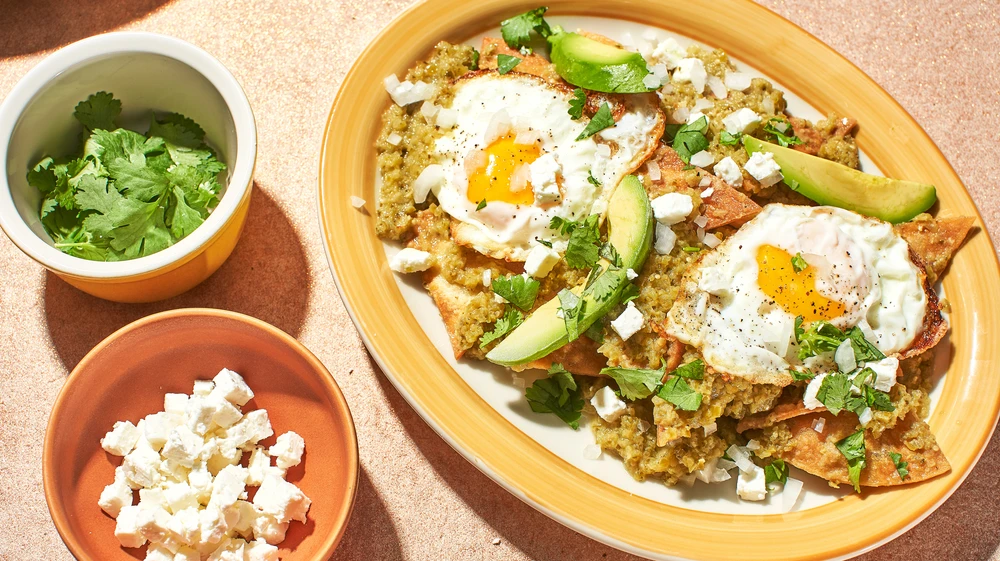

Gabriela Cámara's Chilaquiles

Fried eggs on chilaquiles verdes!
These chilaquiles are a perfect weekend breakfast.
Feel free to top with avocado and your choice of crumblly cheese.
Ingredients
- 1 tbsp plus 1 cup safflower oil
- 1 qt salsa verde
- 12 corn tortillas, cut into 8 wedges
- 1/4 crème fraîche
- 8 to 12 eggs
- 1/2 cup white onion, finely minced
- 1/2 cup cilantro
- 1/2 feta cheese
- 2 avocados cut into 8 slices
Steps
- Step 1
- Step 1
- Step 1
- Step 1
- Step 1
- Step 1
- Step 1
- Step 1